本文章將介紹如何用 iap 遠端
1. 首先打開本機 google SDK 輸入下面指令
沒有安裝 google SDK 可到本篇文章查看如何安裝
1 | gcloud auth login |
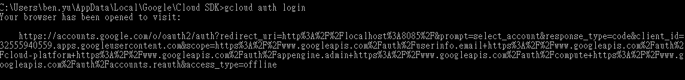
2. 指令輸入完會自動開啟分頁讓你選擇帳號，輸入完帳號後點選允許，出現通過驗證就是成功了
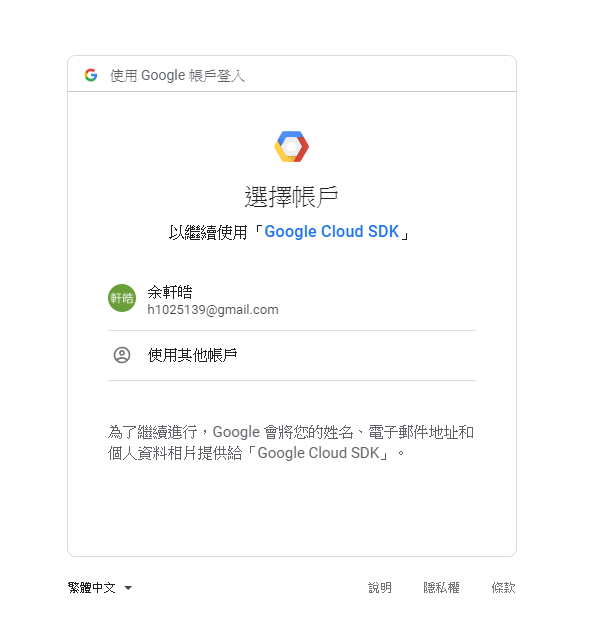
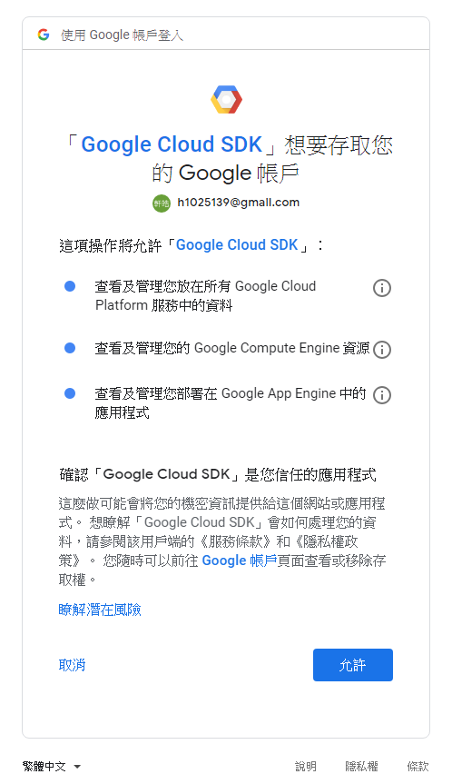
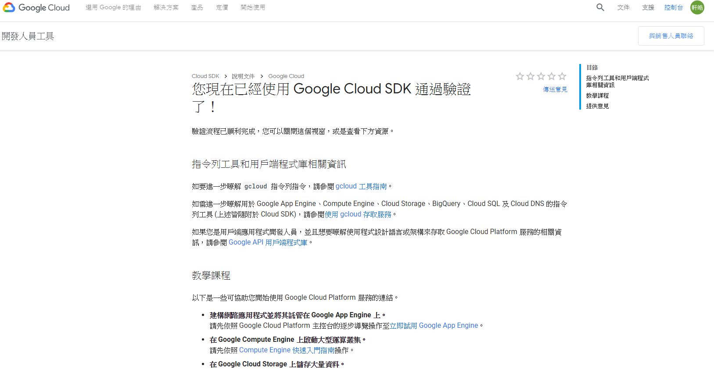
3. 輸入指令選擇專案
1 | gcloud config set project [Project] ( Project 為專案 ID ) |
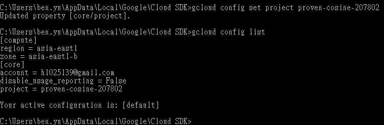
4. 輸入指令查看專案帳號是否正確
1 | gcloud config list |
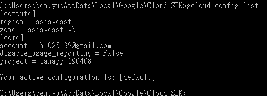
5. 先輸入一次 iap 遠端指令，因為第一次下 alpha 指令會做 alpha 套件安裝
1 | gcloud alpha compute start-iap-tunnel [instance_name] [設定的遠端 port 或 3389] --zone=asia-east1-b --local-host-port=localhost:[想要遠端的 port] |
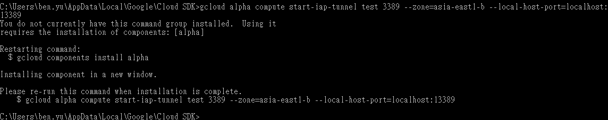
會跑出安詢問，選 Y
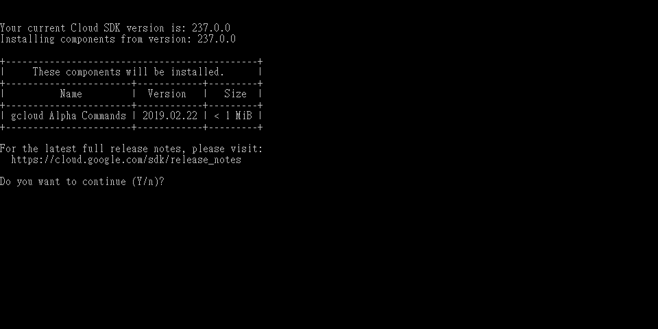
跑讀條
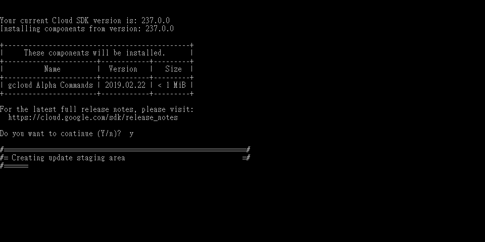
跑完讀條按任意鍵結束視窗
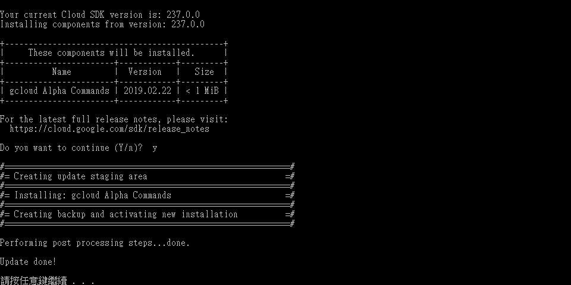
6. 指令開啟防火牆，因為 iap 需要開通 35.235.240.0/20 TCP 的防火牆，開通這個防火牆代表著允許 Cloud iap 的 TCP forwarding 至連線的機器
1 | gcloud compute firewall-rules create cloud-iap --direction=INGRESS --priority=1000 --network=default --action=ALLOW --rules=tcp:3389 --source-ranges=35.235.240.0/20 |
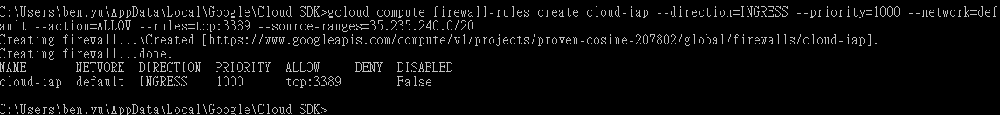
到 GCP 看會看到新增加一條防火牆規則，這樣就是成功了
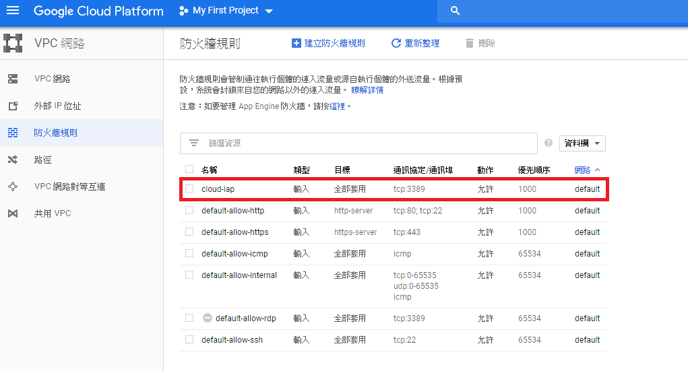
7. 接下來到 GCP 導覽選單 → 安全性 → Identity-Aware Proxy，選擇 SSH 和 TCP 資源然後選擇要開啟 iap 的機器，然後右邊會出現增加權限點選新增成員
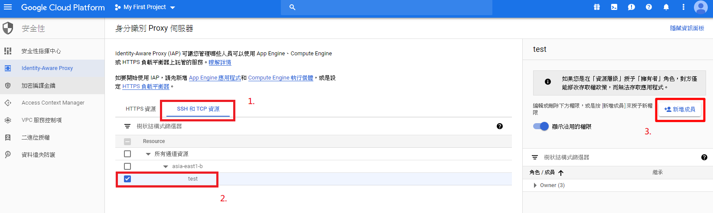
8. 把要新增的成員信箱打上去，角色選擇 Cloud IAP → IAP-secured Tunnel User
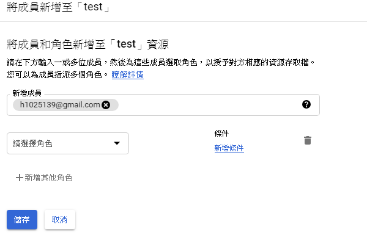
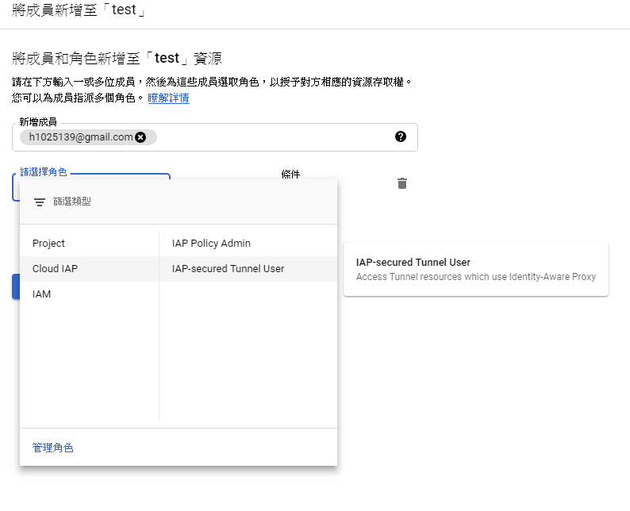
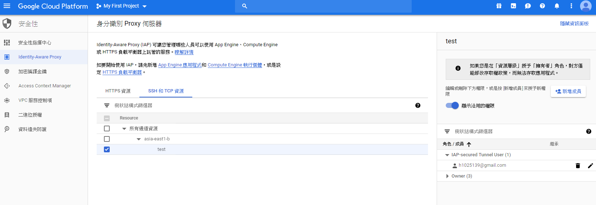
9. 成功後回到本機 google SDK 再輸入一次 iap 遠端指令，看到 Listening on port [你設定的遠端 port]就是成功了
1 | gcloud alpha compute start-iap-tunnel [instance_name] [設定的遠端 port 或 3389] --zone=asia-east1-b --local-host-port=localhost:[想要遠端的 port] |
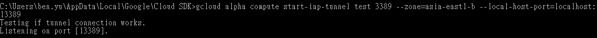
10. 接下來就可以在本機使用 { 127.0.0.1:遠端 port } 遠端了
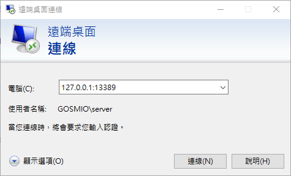
11. 可以 iap 遠端後，可以把 GCP 防火牆 3389 port 停用一樣可以 iap 遠端
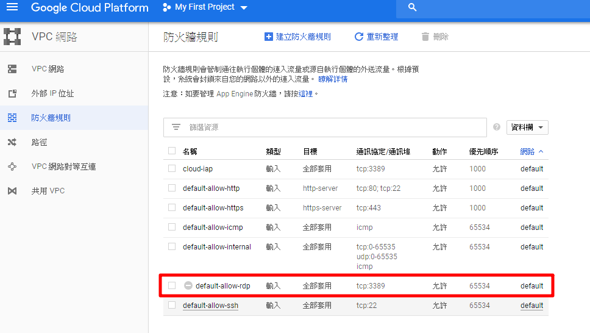